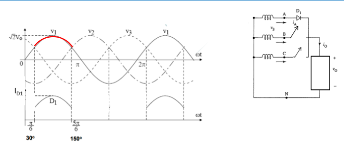
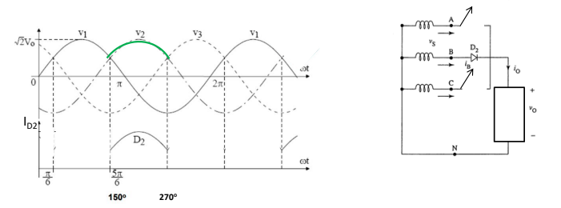
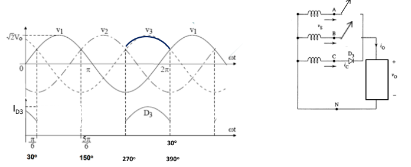
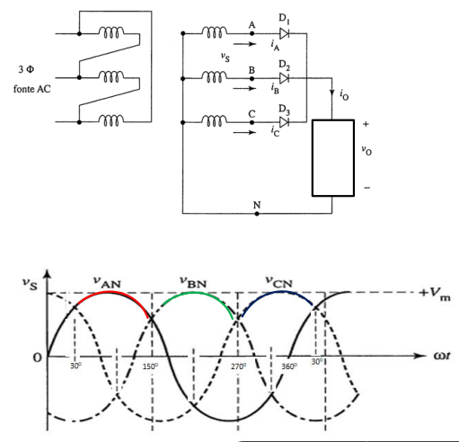

Retificador Trifásico Não Controlado de Três Pulsos
Esse é o modelo de retificador mais básico entre os trifásicos, onde converte uma tensão elétrica alternada (AC) em uma tensão elétrica contínua (DC). Ele é composto por três diodos, um transformador trifásico e um filtro capacitivo.
Seu funcionamento se baseia no princípio de condução de diodos. Quando a tensão de V1 é positiva, o diodo D1 conduz e a carga é conectada ao terminal positivo do transformador.
Quando a tensão V2 é positiva, o diodo D2 conduz e a carga é conectada ao terminal positivo do transformador.
Quando a tensão V3 é positiva, o diodo D3 conduz e a carga é conectada ao terminal positivo do transformador.
As formas de onda da tensão de entrada e da tensão de saída são mostradas na figura abaixo.
A tensão de saída é uma onda senoidal com três pulsos por ciclo. Onde a tensão média da saída é igual à tensão média das tensões das três fases da entrada.
A principal vantagem do retificador trifásico não controlado de três pulsos é sua simplicidade. Ele é um circuito relativamente barato e fácil de implementar.
Sua principal desvantagem é a baixa eficiência, A eficiência desse modelo de retificador trifásico é geralmente inferior a 80%. Além de sua alta distorção de harmônicos que geralmente é superior a 20%.